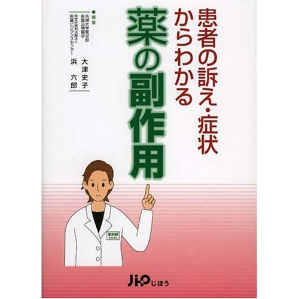

書評コーナー
「薬のチェックは命のチェック」で取り上げた書籍を紹介しています。
季刊誌28号より
患者の訴え・症状からわかる薬の副作用
大津史子、浜 六郎著／じほう
本書は、薬剤師による患者への情報提供が義務化された年（1999年）に「月刊薬事」で連載を始めた 薬剤師向け記事に加筆し、まとめたもの。タイトルにもあるように、患者が訴える症状から薬の副作用を、 一般的全身障害や皮膚障害、免疫障害、各種臓器の障害など部位ごとの16章に分けて解説しています。
例えば、「咳が出る」「熱がある」「食欲がない」と患者が訴え、それが副作用だとしたら？ 副作用によって障害が起こる仕組みや、患者の訴える症状がなぜ出るのかを詳しく解説。 副作用のない薬はありません。条件さえ揃えばだれもが副作用を経験する可能性はあります。
もともとが薬剤師向けなので一般の読者にはやや難しい面もありますが、自分の症状が副作用による障害なのか、 それとも他の病気なのかを見分けるポイントも分かります。 副作用の症例や、副作用を起こしやすい薬剤のリストも豊富に収載されています。 自分自身の症状などと照らし合わせてじっくりと読むと、非常に役立つ一冊だと思います。 薬を飲んでいて気になる症状のある人や、医師に処方された薬をチェックするときにお薦めです。（な）
■ ３２１頁/本体価格３２００円（税別）
ご購入はこちらからできます